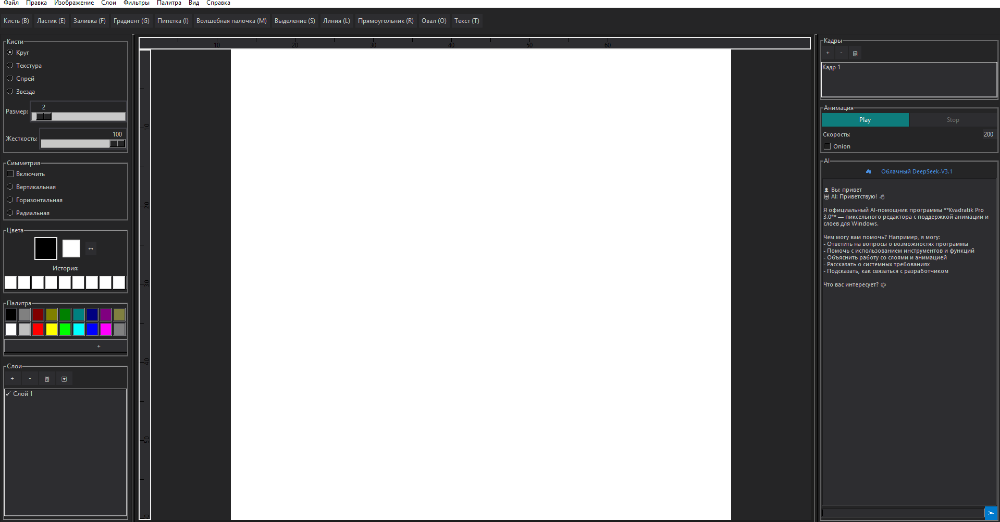

Мощный пиксельный редактор с искусственным интеллектом. Слои, анимация, текст и умный AI помощник на базе DeepSeek.
Полноценный инструмент для написания текста. Пиксельный шрифт 3x5, поддержка кириллицы и латиницы.
Собственный искусственный интеллект на базе DeepSeek-R1:7b. Помогает с идеями, отвечает на вопросы.
🌐 ОБЛАЧНЫЕ:
ollama pull deepseek-v3.1:671b-cloud
💻 ЛОКАЛЬНЫЕ:
# DeepSeek
ollama pull deepseek-r1:7b # 4.7 ГБ
ollama pull deepseek-r1:1.5b # 1.1 ГБ
# Gemma
ollama pull gemma3:4b # 3.3 ГБ
# Llama
ollama pull llama3.2:3b # 2.8 ГБ
* Программа сама выберет лучшую доступную модель
** Рекомендуется 8+ ГБ RAM

Тёмная тема как в VS Code, изменяемые панели, AI помощник
5 видов кистей, симметрия, градиенты, регулировка жесткости. Слои с прозрачностью.
Кадры, onion skinning, экспорт в GIF и спрайт-листы. Разная скорость для кадров.
Пиксельный шрифт 3x5. Поддержка букв, цифр и символов. Вставляй текст прямо на холст.
DeepSeek-R1:7b внутри программы. Помогает с идеями, отвечает на вопросы, объясняет инструменты.
Color Picker, история цветов, основной/дополнительный цвет. Настраиваемая палитра 28 цветов.
Размытие, черно-белое, сепия, инверсия, пикселизация и другие эффекты.
инструментов
видов кистей
слоёв
версия с AI
Бесплатно, без регистрации. Версия 4.0 для Windows 10/11.
⚠️ Перед скачиванием:
• Программа не требует установки
• AI требует установки Ollama (подробности выше)
• При первом запуске Windows Defender может попросить подтверждение
Программа полностью бесплатна. Если она вам помогает, можете угостить автора кофе.
💛 ЮMoneyИли просто на карту: 2202 2056 2856 8104